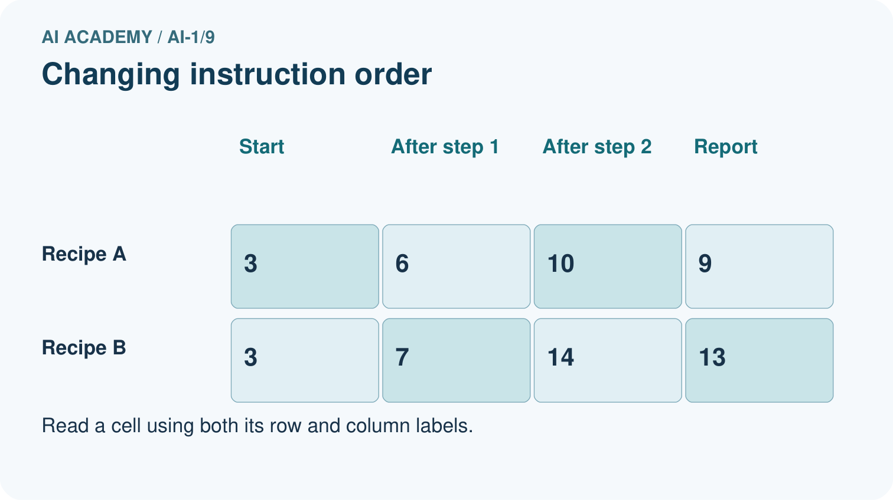
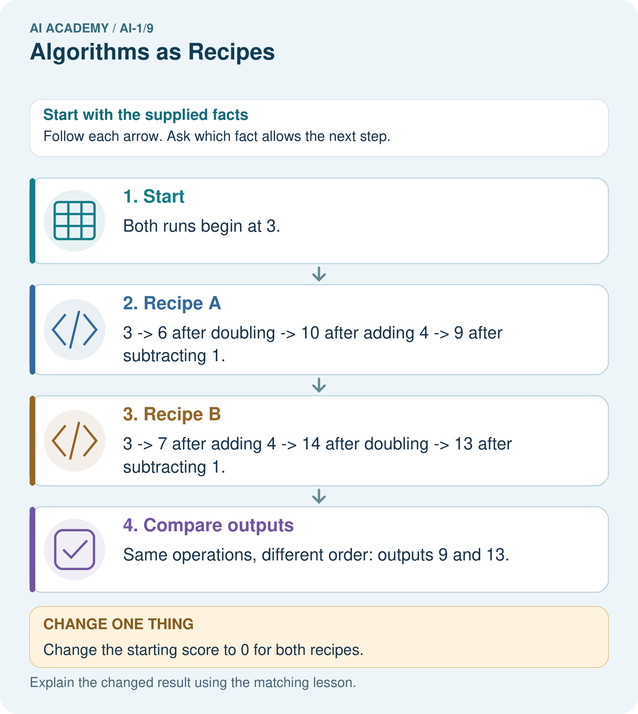

AI Academy · Level 1 · Grade 6 · Week 9 · Teacher guide
Algorithms as Recipes
Learn to understand, design, build, test and explain AI systems responsibly.
Project: Helpful Classroom Sorter
Teacher guide · 1 of 7
Algorithms as Recipes
Teach the learning cycle
Primary target: Trace an ordered algorithm using the current value after every instruction
| Session | Sequence and minutes | Resources |
|---|---|---|
| Session 1 · Understand · 45 min | 0–7: recall and prerequisite; 7–15: inspect the concrete case and predict; 15–30: teacher models the worked trace; 30–40: learners explain a step using the text and visual; 40–45: check the core idea. | Sections 1–6; record the brief recall in the workbook. |
| Session 2 · Practise · 45 min | 0–5: retrieve the procedure; 5–15: W2 completion practice; 15–23: explain and check with a partner; 23–30: each learner answers the misconception check; 30–40: targeted reteaching or a harder variation; 40–45: prepare the investigation. | Sections 7–10; use the matching workbook W2 and misconception check. |
| Session 3 · Investigate and transfer · 45 min | 0–5: retrieve the decision rule; 5–20: investigate or trace; 20–30: start the independent case; 30–38: connect the project; 38–43: act on feedback; 43–45: plan the return check. | Sections 9 and 11–14. Give extra time to finish the full task set; use Section 15 when the week includes a coding lab. |
This is a starting allocation of 135 minutes, not a validated duration. Preserve all named topics. Schedule extra time for connected examples, the full investigation, independent cases and project building. Repeated copies of a case share one recorded attempt; they are not new evidence.
Retrieval answer guidance
Features: Useful Clues
Without opening the old lesson, explain one key idea from Features: Useful Clues. Give an example and a mistake that the idea helps you avoid.
Look for: Choose recorded properties that preserve distinctions needed for a stated task
Reference example, not the only acceptable wording: Use length and width measured before the decision. State the order as length in cm, then width in cm; the record is 12, 8. The target is fits or too large under the guide, and this card is fits because both equalities are included. Colour and card number are not needed for this rule; the final inspection sticker copies the answer and is unavailable before inspection.
Sound Becomes a Signal
Without opening the old lesson, explain one key idea from Sound Becomes a Signal. Give an example and a mistake that the idea helps you avoid.
Look for: Interpret an ordered sequence of sound-signal samples with a stated time interval
Reference example, not the only acceptable wording: Five samples, a 2 ms interval, and 8 ms from first to last. Consecutive pairs make gaps 0-2, 2-4, 4-6 and 6-8: four gaps between five samples.
Sensors Are Messengers
Without opening the old lesson, explain one key idea from Sensors Are Messengers. Give an example and a mistake that the idea helps you avoid.
Look for: Describe a measurement using its quantity, value, unit and conditions
Reference example, not the only acceptable wording: Keep the observed value 24 and approximate time lunchtime; mark the unit, exact time if needed, location, exposure and device identity as unknown or to be checked. A suitable completed record needs air temperature, value, unit and relevant conditions. Invented degrees C or shade is not an observation.
Use the student module and workbook section with this exact week title. The worked case, independent question and answers below form one aligned lesson sequence.
What the learner must demonstrate
On numbered squares 0–5, start at 1 facing increasing numbers. Execute FORWARD 2, TURN, FORWARD 1, STOP. Define TURN as reversing direction. Trace position and direction after every instruction. What if TURN were unspecified?
Concept to explain
An algorithm is an ordered, testable procedure, with or without code.
| Term | Meaning |
|---|---|
| algorithm | ordered procedure for a task |
| step | one executable action |
| sequence | the order in which steps run |
| assumption | condition taken for granted |
Prepare the class
Use the supplied scenario, student illustrations and blank paper. For numeric work, offer counters or a calculator after learners show the setup. Fictional records are supplied; personal data and paid accounts are unnecessary.
Allow 80 minutes: recall 8; explanation 12; worked demonstration 15; guided practice 20; independent assessment 15; project and reflection 10. Extend the lab into a second session when needed.
Preparation for the connected explanation
This week develops precise sequential execution with small whole-number values. An algorithm is a procedure; state consists of the current values being tracked. Make the transition from one variable to two explicit. Copying in these exercises means copying a number value, not linking boxes. Avoid presenting this as a claim about every programming-language object model. No software accounts are required, and a fixed arithmetic procedure is not evidence of learning from data.
Readiness answer
The selected record hides width, which this task needs. Identical length-only inputs can require different labels. We must retain the relevant information instead of expecting a later process to recover it with certainty.
An erasable box labelled Score and instruction cards for add, double, subtract, set, report and stop
Two erasable boxes labelled X and Y, and paper traces with Stage, X and Y columns
The independent W4 task on a separate sheet; counters may support addition before students trace without them
End goal for the pictorial case
By the end, I can trace changing state and explain why instruction order matters.
This added worked case illustrates the week’s main idea. Retain all original and connected topics; schedule its practice within the teaching cycle.
Teacher guide · 2 of 7
Explain the mechanism
Explain the mechanism
Follow the information instead of imagining magic inside the machine.
INPUT goal, starting state, and available objects
PROCESS follow ordered unambiguous steps
OUTPUT completed task or a visible failure point
CORE IDEA An algorithm is an ordered, testable procedure, with or without code.
UNDER THE HOOD An algorithm is a finite procedure whose steps and control flow can be executed. Correctness depends on assumptions, preconditions, order, and termination. Code is one representation of an algorithm, not the definition itself.
Draw a fresh example with all three stages:
Every step connects a claim to observable evidence.
CASE A paper robot cannot infer missing intentions; it needs ordered steps that another person can execute and test.
STEP 1 — OBSERVE goal, starting state, and available objects
STEP 2 — TRACE follow ordered unambiguous steps
STEP 3 — CONCLUDE completed task or a visible failure point
MODEL REASONING A strong algorithm states the starting arrangement, names each object, orders actions, and includes checks such as whether the bag is open. The revision targets the failed assumption rather than replacing every step.
DO NOT OVERCLAIM A goal is not yet an algorithm; each step must tell the actor what to do.
What new evidence could change this answer?
Concrete teaching case
A robot starts on the left of three squares, facing right. It executes MOVE, MOVE, STOP, each MOVE being one square.
Trace the position after each command.
Exact explanation to model
Middle, rightmost, unchanged. Direction, distance and starting conditions must be specified.
Explain the added worked example
A classroom score display starts with the number 4. Its instructions are: add 3 to score; double score; subtract 2 from score; report score and stop. What number should it report? Before doing the arithmetic, name the value being tracked and write its starting value. Here the variable is score and the initial state is score 4.
An algorithm gives precise instructions for a task. In this chapter each instruction is carried out once, in the written order. An update replaces the current value. After adding 3, score is 7. The next instruction therefore doubles 7, not the original 4. Keeping only the starting value in mind is a common source of errors.
A variable name stays the same while its value may change. Think of score as the label on an erasable number box. Updating the box does not keep all earlier numbers inside it. A separate trace preserves those earlier states so we can explain how the result was reached. This score procedure follows fixed arithmetic instructions; it does not learn from examples.
Write the initial state first. For each instruction, read the latest value, perform the operation, and record the new state. A transition is the change from one recorded state to the next.
In words, double score means calculate twice its current value and store that result in score. Add 3 to score means increase the current value by 3. Set score to 3 means replace it with 3 instead. These instructions sound similar but do different things: if score is 7, adding 3 produces 10, while setting it to 3 produces 3.
A trace is evidence of one execution from one initial state. To compare two procedures fairly, keep the initial state the same and list every intermediate value. Then you can point to the first difference instead of only comparing the final numbers.
Key terms
| Term | Meaning |
|---|---|
| Algorithm | A precise procedure for carrying out a task |
| Variable | A named place for a value that can be updated |
| State | The current values being tracked at a particular point in a process |
| Initial state | The values before the first instruction is carried out |
| Trace | A record of the state as instructions are carried out in order |
Model the reasoning aloud
Use the complete worked example below before asking learners to complete W2. Reveal a small part, invite a prediction, then explain the deciding step. These teacher notes contain solutions; do not reveal the independent case answer during modelling.
| After first instruction | Add 3 gives 7 | Double gives 8 |
|---|---|---|
| After second instruction | Double gives 14 | Add 3 gives 11 |
| After subtracting 2 | Report 12 | Report 9 |
Both procedures use add 3, double and subtract 2, but the first two operations are exchanged. Doubling after the addition also doubles the extra 3. Adding afterward does not. The final difference comes from the order, even though both procedures started at 4.
Now use two number boxes: A starts at 2 and B starts at 0. Copy the current value of A into B, then add 5 to A. After the copy, A is 2 and B is 2. After the addition, A is 7 and B remains 2. Copying stores the value at that moment; it does not create a lasting connection between these number boxes. Record both values after each instruction, including the one that did not change.
| Thinking move | Teacher prompt |
|---|---|
| Plan | What is given? What is the question? Which procedure fits these facts? |
| Do | Point to each input and intermediate step in the worked trace. Name the rule that allows the next step. |
| Check | Does the output answer the question? Which assumption or limitation prevents a larger claim? |
Use the diagram and verbal explanation together. Ask learners to match a sentence to a specific visual step; do not assign learners fixed visual or auditory learning styles.
A pictorial worked case: Algorithms as Recipes
A fictional paper badge machine transforms an initial score using an ordered recipe.
The facts we will use
Start score=3. Recipe A: double, add 4, subtract 1, report.
Recipe B swaps the first two operations but keeps the same starting score.


Read the picture one step at a time
Why this result follows
Every instruction reads the current score, not the original one unless explicitly told to. In B, doubling also doubles the added 4. In A, the extra 4 is added after doubling. The final difference of 4 follows from that order, not from different starting data.
What this example does not establish
One traced input checks one run; it does not establish every recipe is equivalent or validate an entire program.
Change one thing in the pictured case
Change: Change the starting score to 0 for both recipes.
Prediction: A reports 3 and B reports 7.
Reason: A: 0→0→4→3. B: 0→4→8→7.
Ask while showing the picture
Cover the result. Ask learners to name the inputs and predict the next step. Uncover one step, connect the icon to the actual procedure, and explain its evidence. Then change the supplied condition and compare. The picture is a representation; it does not document execution of a real AI model.
Teacher guide · 3 of 7
Demonstrate and guide practice
Demonstrate and guide practice
Board sequence
Write the given facts: A robot starts on the left of three squares, facing right. It executes MOVE, MOVE, STOP, each MOVE being one square.
Write the question to explain: Trace the position after each command.
Reveal after predictions: Middle, rightmost, unchanged. Direction, distance and starting conditions must be specified.
Keep for an independent attempt: Instructions say pick up a pencil, write your name, then find paper. Find the first ordering problem and rewrite the three steps so another learner can follow them.
Classroom dialogue
Ask: Which facts are given, and which would we have to assume? Learners mark relevant details before discussing answers.
Say: Predict first. Show the rule, information path or calculation that would produce the result. A correct guess is not yet an explanation.
Reveal reasoning one step at a time. Explain why a tempting alternative fails. Write units and denominators for arithmetic, trace conditions for decisions, and identify supporting sources for claims.
In pairs, one learner solves while the other checks evidence; exchange roles. Remove the worked answer before independent assessment.
Model these guided questions
The guided trace is 5,7,14,13. Double reads 7 because the add-2 instruction has already replaced 5 with 7. For the exit response, compare the initial states and the meaning/order of the instructions, then compare successive recorded states. Different starts can give different correct results. With matching starts and instructions, the first differing transition identifies where to inspect the calculation or interpretation.
Case-specific teaching sequence
| Stage | Teacher action |
|---|---|
| Session 1 start 0 to 7 minutes | Recall why a record must retain relevant information. Introduce score as a named box and write the initial value before the first update. |
| 7 to 20 minutes | Model score 4 through add 3, double and subtract 2. Erase and replace the current value while retaining every old value in a separate trace. |
| 20 to 33 minutes | Compare the reordered procedure from the same initial 4. Contrast set score to 3 with add 3 to score using a current value of 7. |
| 33 to 45 minutes | Students complete W1 and W2. Ask them to identify the value each instruction reads, not just announce the final result. |
| Session 2 start 0 to 8 minutes | Model the A and B copy example: 2,0 becomes 2,2 then 7,2. Record unchanged values as well as updated ones. |
| 8 to 23 minutes | Use W3 and the guided response to identify the first incorrect transition. Require later states to be recomputed from the repaired value. |
| 23 to 38 minutes | Collect W4 independently. Learners trace both instruction orders from the same start and explain why copying a number is not a lasting link. |
| 38 to 45 minutes | Discuss W5 and the exit response. Show why an intermediate trace can distinguish procedures whose final values happen to match. Preview conditional instructions. |
Reduce help deliberately
Completion task: Two procedures start score at 6. Procedure A sets score to 4, then adds 2. Procedure B adds 4 to score, then adds 2. Trace both and explain why the first instructions are different.
Teacher check: A traces 6, 4, 6. B traces 6, 10, 12. Setting replaces the current value with 4; adding increases the current 6 by 4. The procedures therefore have different intermediate and final states.
Start by identifying the given inputs together. Leave the intermediate steps blank. If needed, model one step, then withdraw that help on the next step. Move to a full trace only when the partial trace is understood. For partners, alternate explainer and checker; collect a response from every learner before discussion.
Individual reasoning check
Use the worked case for Algorithms and changing state. Proposed explanation: “Every instruction uses the original number”. Decide whether this explanation is supported. Point to the step or supplied fact that decides; explain your repair if needed.
Expected correction: Point to the most recent trace entry. Double after add reads the updated number, not the initial one.
Collect explanations, not only yes/no votes. If a misunderstanding is common, re-model the relevant step for the class. If it affects a few learners, give a short targeted group explanation while others solve a more demanding variation.
Pictorial practice question
Use the arrows to explain where the two zero-start runs first differ.
Reasoned teacher answer
They first differ after operation one: A has 0 and B has 4. Their reports are 3 and 7.
Changed-case reasoning: A reports 3 and B reports 7. A: 0→0→4→3. B: 0→4→8→7.
Collect each learner’s explanation before discussion. Use the first missing connection between input, deciding step and result to choose support. This question is worked-case practice, not fresh mastery evidence.
Teacher guide · 4 of 7
Run the weekly evidence lab
Run the weekly evidence lab
Predict first, test honestly, and explain what the evidence means.
State your prediction before the result is known.
Complete the task: Write directions for a paper robot to pack a bag.
Keep a normal case and an edge case clearly separated.
Record what happened—even when it does not match your prediction.
Explain the result, one limitation, and the next useful test.
INDEPENDENCE After support is removed, repeat the proof with a fresh case.
Make the lab runnable
Use the concrete case as the shared normal case and the independent question as a second case. Each pair creates a boundary or missing-information case and predicts its result before testing. Keep the expected result separate from an observed mistake.
| Record | What to capture |
|---|---|
| Input or evidence | Exact data, instruction or claim |
| Expected result | Answer or safe fallback declared before the run |
| Observed result | Actual result, including errors |
| Explanation | Rule, calculation or evidence explaining the outcome |
| Next test | One justified change and a new prediction |
Diagnose and reteach
CLAIM TO REPAIR Correct actions always work in any order.
For guessing, return to given facts and request a trace. For vocabulary without application, use one example and one non-example. For arithmetic errors, check the setup before the calculation. Finish with a different uncoached case before recording mastery.
Address these additional misconceptions
Every instruction uses the original number: Point to the most recent trace entry. Double after add reads the updated number, not the initial one.
Set and add mean the same thing: Start at 6: setting to 4 gives 4 while adding 4 gives 10. Ask which value remains in the box.
Copying keeps number boxes linked: Copy A 2 into B, then change only A to 7. B still contains the copied number 2.
A matching final value proves the whole process: Compare 10,12,10 with 10,14,10. The final values match but the steps do not.
Match the support to the first error
| What the response shows | Next teaching action |
|---|---|
| Missing or misread facts | Read the case aloud, mark supplied versus unknown facts, and let the learner restate it. |
| Wrong procedure | Return to the deciding step in the worked case. Contrast it with the proposed incorrect explanation. |
| Arithmetic or implementation error | Trace intermediate values or lines; preserve the first mismatch and retry that step. |
| Correct result without a reason | Ask for a trace and a changed case before marking independent understanding. |
| An unsupported wider claim | Ask which supplied evidence supports the claim and which further observation would be needed. |
Offer an oral explanation, drawing, enlarged visual or fewer examples when that removes a reading/writing barrier. Keep the same reasoning goal. Stretch secure learners by changing a boundary or assumption and asking them to defend the effect, not simply by assigning more of the same questions.
Teacher guide · 5 of 7
Assess and explain the answers
Assess and explain the answers
Worked case answer
Middle, rightmost, unchanged. Direction, distance and starting conditions must be specified.
Independent question
Instructions say pick up a pencil, write your name, then find paper. Find the first ordering problem and rewrite the three steps so another learner can follow them.
Expected independent answer
Find paper before writing. One valid order is find paper, pick up a pencil, write your name on the paper. Instructions must supply needed materials before the action that uses them.
What counts as evidence
| Criterion | 0 points | 1 point | 2 points |
|---|---|---|---|
| Result | Incorrect or absent | Partly correct | Correct with necessary conditions |
| Reasoning | No supporting trace | Some steps | Clear mechanism, calculation or source support |
| Limit | Overclaims certainty | Vague limitation | Relevant uncertainty or missing fact |
| Transfer | Copies without adapting | Adapts with prompts | Solves a changed case independently |
Use 6/8 as a classroom checkpoint, with 2 required for both Result and Reasoning. This is a proposed teaching rule, not a validated certification threshold. Do not count a coached answer as independent mastery; correct unsafe or unsupported claims regardless of total.
Feedback
Ask the learner to find the evidence that challenges this claim: “Correct actions always work in any order.” Keep the first attempt and an uncoached retry separate.
Original transfer answer
Positions are 1 initially, then 3, 3, 2, 2. Direction changes from increasing to decreasing at TURN. Without TURN's meaning the later position is ambiguous; an algorithm requires enough detail for another person to reproduce it.
Explanations for the additional workbook examples
W1 Trace the current value
Start score at 3. Add 4 to score, double score, then subtract 5. Record the initial state and the state after each instruction. Underline the number used by the doubling step and explain where it came from.
The trace is 3, 7, 14, 9. The doubling step uses 7, the current value after adding 4 to 3. It must not double the initial 3. Accept a table, arrows or clearly labelled sentences that preserve the order.
W2 Distinguish replacement from addition
Two procedures start score at 6. Procedure A sets score to 4, then adds 2. Procedure B adds 4 to score, then adds 2. Trace both and explain why the first instructions are different.
A traces 6, 4, 6. B traces 6, 10, 12. Setting replaces the current value with 4; adding increases the current 6 by 4. The procedures therefore have different intermediate and final states.
W3 Repair the first error
A procedure starts score at 6, adds 2, doubles score, then subtracts 3. A trace says 6, 8, 12, 9. Identify the first wrong transition, explain the likely mistake and write a complete corrected trace. Why is changing only the last value inadequate?
The transition from 8 to 12 is the first error. It appears to double the initial 6 instead of the current 8. The correct trace is 6, 8, 16, 13. Changing only the last value leaves the incorrect update unexplained and does not show a valid execution.
W4 Trace two changing number boxes
For a new display, X starts at 4 and Y starts at 1. Copy the current X into Y; add 3 to X; double Y; report both and stop. Record X and Y initially and after each instruction. Explain why Y does not become 7 when X changes. Then swap the first two instructions and trace the new procedure from the same initial state.
Original trace in X,Y order: 4,1 then 4,4 then 7,4 then 7,8. Reporting leaves 7,8 unchanged. Copying captured X as 4; it did not link Y to later changes in X. With the first two instructions swapped: 4,1 then 7,1 then 7,7 then 7,14. The changed order makes the copy capture 7 instead of 4.
W5 Test what a final answer can prove
The required procedure starts score at 10, adds 2 and subtracts 2. A learner instead adds 4 and subtracts 4. Both report 10. Write both traces and explain whether matching the final result proves that the learner followed the required procedure.
Required trace: 10,12,10. Learner trace: 10,14,10. Matching the final value does not prove the required procedure was followed; the intermediate states and instructions differ. Inspecting the trace reveals the discrepancy even though the final result matches.
Assess independent transfer
Selected case: For a new display, X starts at 4 and Y starts at 1. Copy the current X into Y; add 3 to X; double Y; report both and stop. Record X and Y initially and after each instruction. Explain why Y does not become 7 when X changes. Then swap the first two instructions and trace the new procedure from the same initial state.
Selected case answer
Original trace in X,Y order: 4,1 then 4,4 then 7,4 then 7,8. Reporting leaves 7,8 unchanged. Copying captured X as 4; it did not link Y to later changes in X. With the first two instructions swapped: 4,1 then 7,1 then 7,7 then 7,14. The changed order makes the copy capture 7 instead of 4.
| Dimension | Evidence required |
|---|---|
| Explanation | Names the applicable idea or procedure and ties it to the supplied facts. |
| Trace and result | Preserves the given inputs and shows the relevant intermediate steps; distinguishes a prediction from an observed execution. |
| Limits | States the assumptions, missing evidence or conditions under which the result would change. |
Record each dimension as not yet, with support, or independent. Accept a valid alternative procedure with a defensible trace. Do not penalise an honestly recorded model failure if the learner correctly explains its evidence and limits.
Feedback that the learner uses
Name the earliest unsupported step and give one action to repair it. Have the learner make that repair now and explain why. Then assess the relevant skill on a fresh, fully specified case. Confirm it was not previously practised with feedback; solve and check the new case before assigning it. A follow-up design prompt is a starting brief, not automatically an equivalent test.
Teacher guide · 6 of 7
Connect and extend learning
Connect and extend learning
Helpful Classroom Sorter
Write the first executable sorting algorithm for one easy item before adding branches or AI.
Keep the decision, input, result, explanation and remaining limitation in the project evidence record. Retrieve this record next week rather than restarting the project.
Support and stretch
Use physical cards, spoken explanations and a three-stage drawing. Read aloud without giving the answer. Stretch: compare two mechanisms with the same visible output and explain what evidence distinguishes them.
Exit reflection
Ask for one decision the learner can now justify and one situation requiring more evidence or human review. Confidence ratings are separate from correct independent performance.
Bridge to the next week
Next: Week 10: If/Then Decisions. Retrieve today’s evidence and identify what carries forward and what is new.
Support and fresh reassessment
Use a finger or token to mark the current instruction and provide a blank trace with one row per update. Let learners verbalise Read, calculate, replace, record. Allow oral explanations alongside the table. Extension: starting at 0, compare add 2 then double with double then add 2; explain why their difference remains 2 for any starting whole number.
W4 is secure when both traces include both variables after each instruction, copying preserves the then-current value, and the swapped procedure correctly ends at X 7 and Y 14. A correct final pair without intermediate states is incomplete evidence. After support, retry from X 3 and Y 0 with copy X into Y, add 2 to X, double Y. The expected states are 3,0 then 3,3 then 5,3 then 5,6.
Week 10 adds conditions and boundary cases. Students will decide which instruction runs by testing the current state, then trace the selected update.
Plan the delayed return
Suggested return points in this level: ai-1/10, ai-1/12, ai-1/15. Use actual classroom dates, adjusting for holidays and gaps. One, three and six teaching weeks are scheduling choices, not a claimed optimal spacing.
At a delayed check, ask for the idea from memory and a changed application. Compare with the earlier independent response and record support used. For a new level, revisit the previous capstone before checking the new prerequisites.
| Record | Teacher evidence |
|---|---|
| Learner code and date | |
| Concept and case used; prior exposure | |
| Explanation / trace / limits | |
| Support and first repair | |
| Changed case and delayed outcome | |
| Next teaching action |
Use the evidence to choose reteaching or the next step. A completed page, confidence rating or attractive project does not by itself demonstrate understanding.
Project evidence from this case
Write the sorter’s steps in order, showing which values each step updates so a partner can reproduce the result.
Teacher guide · 7 of 7
Prepare, teach and assess
Teaching target: Trace an ordered algorithm using the current value after every instruction
Prepare the labelled worked-case picture, the matching workbook, fictional input cards and a place for individual responses. No paid AI account is required for the paper reasoning activities.
| Session | Plan | Resources |
|---|---|---|
| Session 1 · Understand · 45 min | 0–7: recall and prerequisite; 7–15: inspect the concrete case and predict; 15–30: teacher models the worked trace; 30–40: learners explain a step using the text and visual; 40–45: check the core idea. | Sections 1–6; record the brief recall in the workbook. |
| Session 2 · Practise · 45 min | 0–5: retrieve the procedure; 5–15: W2 completion practice; 15–23: explain and check with a partner; 23–30: each learner answers the misconception check; 30–40: targeted reteaching or a harder variation; 40–45: prepare the investigation. | Sections 7–10; use the matching workbook W2 and misconception check. |
| Session 3 · Investigate and transfer · 45 min | 0–5: retrieve the decision rule; 5–20: investigate or trace; 20–30: start the independent case; 30–38: connect the project; 38–43: act on feedback; 43–45: plan the return check. | Sections 9 and 11–14. Give extra time to finish the full task set; use Section 15 when the week includes a coding lab. |
Before class, solve the supported practice: Two procedures start score at 6. Procedure A sets score to 4, then adds 2. Procedure B adds 4 to score, then adds 2. Trace both and explain why the first instructions are different.
Reasoned practice answer: A traces 6, 4, 6. B traces 6, 10, 12. Setting replaces the current value with 4; adding increases the current 6 by 4. The procedures therefore have different intermediate and final states.
Check every learner before discussion: Use the worked case for Algorithms and changing state. Proposed explanation: “Every instruction uses the original number”. Decide whether this explanation is supported. Point to the step or supplied fact that decides; explain your repair if needed.
Misconception repair: Point to the most recent trace entry. Double after add reads the updated number, not the initial one.
Support: read the exact case aloud, enlarge the labelled picture, supply input cards and model only the first deciding step. Accept a spoken explanation or drawing; retain the reasoning goal.
Extension: Change the starting score to 0 for both recipes. Require a prediction and a reason before comparing. Expected result: A reports 3 and B reports 7. Reason: A: 0→0→4→3. B: 0→4→8→7.
Independent assessment: withhold the reserved answer until the learner has attempted the new case. Record support separately from correctness.
| Criterion | Not yet | With support | Independent |
|---|---|---|---|
| Explanation | Names an answer without a deciding fact | Uses a hint to link fact and decision | Explains the deciding fact in own words |
| Trace or test | Cannot connect input and result | Completes steps with prompts | Traces or tests a changed case accurately |
| Limits and revision | Claims more than evidence supports | Names a limit after a prompt | States a defensible limit and useful next test |
Project checkpoint: Make a transparent first version. Keep a trace of how one input becomes an output; explain the rule or learned component.
Use the weekly teacher answer for topic-specific reasoning. A saved progress tick is an activity record; judge mastery from the learner’s explanation and evidence.